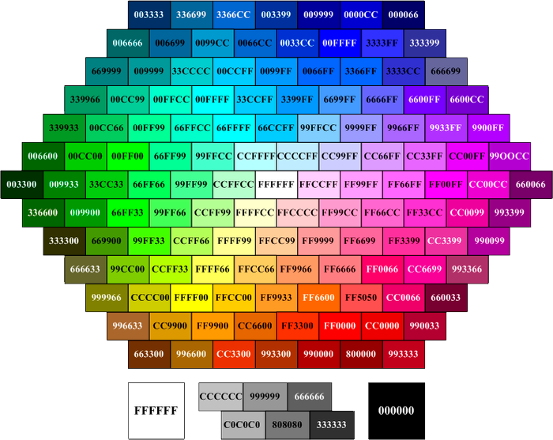

Настоло время изучить немного странностей в поведении стилей при верстке.
Данный текст окрашен в этот цвет неспроста. Наша цель сегодня изучить особенности поведения цвета на страничке.
Оказывается, получение изменения цвета в теге font было заведено еще со времен популярности Netscape.
А теперь подробнее.
Подробнейший разбор алгоритма разбора приведен по
ссылке.
Если применить эти правила, то получим следующее:
Заменяем все неправильные шестнадцатеричные символы нулями 0, BruceWillis превращается в b00ce000000.
“Добиваем” число нулями до количества знаков, делимого на 3 (11 -> 12), получаем b00ce0000000
Разбиваем на три группы, каждая из которых отвечает за одну компоненту RGB: RGB (b00c, e000, 0000)
Обрезаем каждый из аргументов справа, оставляя 2 символа, и получаем наш результат
RGB (b0, e0, 00) = #b0e000 или он же RGB(176, 224, 0).
А вот и второй пример:
Такимже способом разберем CANDY.
Ну и еще немного исторических интересностей про цвета.
Вашему вниманию предлагается палитра цветов, рекомендуемых для экранного дизайна. Безопасные цвета всегда неизменны при переходе от одного браузера к другому, от одного монитора к другому, или от одной платформы к другой, с их различными разрешениями и возможностями цветопередачи.
Если веб-браузер не в состоянии правильно отобразить тот или иной цвет, то он пытается подобрать похожий или смешивает несколько соседних цветов. Может так случиться, что исходный цвет будет замещён чем-то совершенно неподходящим.
Сегодня уже весьма спорна целесообразность использования безопасной палитры, однако используя её, вы будете уверены, что цвета будут выглядеть неизменно хорошо и без искажений даже на очень старых компьютерах, вплоть до 8-битного режима отображения с поддержкой всего 256 цветов.
Безопасные цвета были выведены математически, а не потому, что они кому-то больше пришлись по душе. Для получения безопасного цвета из Красного, Зелёного и Синего, нужно использовать только данные десятичные значения: 0, 51, 102, 153, 204, 255 — и никакие другие. Каждое из трёх шестнадцатеричных значений не должно отличаться от 00, 33, 66, 99, CC, FF.
